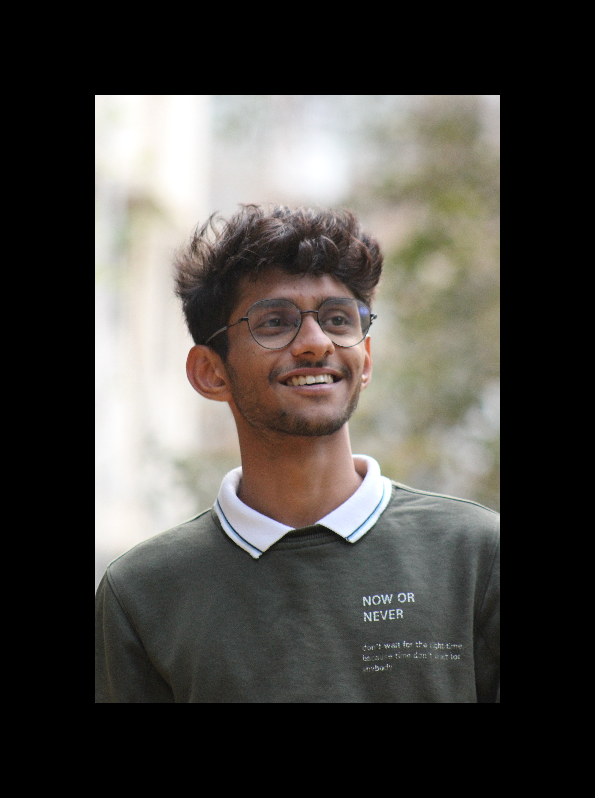

RESUME

Ayan Khan
BE/Data Science
ENGINEERING
About Me:
i Am Friendly To Everyone.
I Like Web development, i like to build Websites...
Even Tho..I've never made one, I Think It's Amazing to Learn Things Yourself and make your Own Websites.
I Am also Passionate About Data Science-The Upcoming Future Of This World.
Right Now, I am Starting My journey By Learning HTML, CSS & JavaScript From Scratch By Opting Course in Udemy, named - Complete 2023 Web Development Bootcamp - By Dr. Angela Yu.
My First Goal is To Learn Consistency and be punctual in Any Task, i am Going to Opt.
Education:
- SSLC % = 89%
- 12th % = 85%
- BE-DATA SCIENCE (First Year)
- MVJ COLLEGE OF ENGINEERING, BANGALORE.
Experience:
- Some Experience in Marketing, As i was a marketing team Member And Was Assigned work to Upload about Our Fest In Website Named 'Knowafest' - During Our College Annual Technical Fest 2023- VertechX
- No Experience Yet in Web development, Just Processing knowledge and Improving Myself.(it's a Sample Resume)
Gonna edit this; Once i get some More experience In This Feild.
Skills:
Team Management
C ptrogramming
Python
C++
HTML5
Social Media
Marketing
Responsibility
Instagram Marketing
Website Marketing
Photography
Attention To Detail
Certifications:
- Programming In C - ProgrammingHub
- Programming In C++ - ProgrammingHub
- Introduction to Python - Coursera
- Introduction to HTML5 - ProgrammingHub
- Marketing Stratergies - Udemy
Achievements:
- Participated District Level Football Tournament In 12th.
- Secured First place in Taluk Level Football Tournament.
- Secured First place in Taluk Level 1500m Race and was selected for District.
Contact: